EDUSRC
注意，本文章已经在合天网安实验室公众号首发，现在转载至自己的博客。
0x1.前言
本文章仅用于信息安全防御技术分享，因用于其他用途而产生不良后果，作者不承担任何法律责任，请严格遵循中华人民共和国相关法律法规，禁止做一切违法犯罪行为。文中涉及漏洞均以提交至教育漏洞平台，现已修复。
0x2.背景
本人从9月10号开始挖掘教育网的漏洞，截至到10月10号已经上了一百多分，其中还挖掘到了多个证书站的漏洞。
然后经过有师傅提醒，说某某985证书快要上线了，我看了一下漏洞提交的还不算太多，这不赶紧抓住机会上分一波？从清楚目标到挖出漏洞不到一天（主打一个快速挖掘），于是就有了这篇文章。
0x3.信息搜集
渗透测试的第一要义是信息搜集，你能搜集到别人搜集不到的信息，你就能挖到别人挖不到的漏洞
——–c2yb8er
这里推荐我使用的一个集成工具：oneforall，工具地址：https://github.com/shmilylty/OneForAll
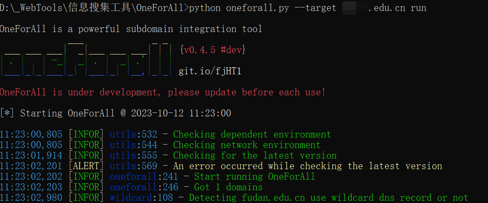
然后收集到大量资产后，我会先初步使用httpx对一些路径进行快速批量探测：
httpx工具地址：https://github.com/projectdiscovery/httpx
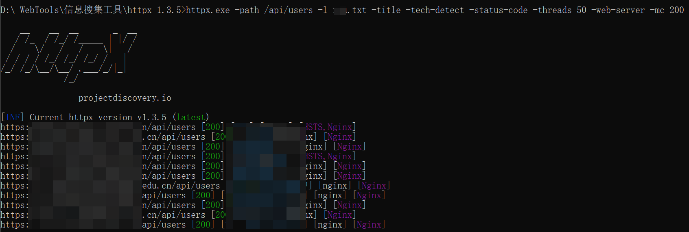
1 | httpx.exe -path /api/users -l target.txt -title -tech-detect -status-code -threads 50 -web-server -mc 200 |
这里将你搜集的资产的链接放在target.txt中
-path /api/users: 这是目标URL的路径，其中/api/users表示要测试的API端点的路径。-title: 此选项指示工具在输出中包括目标网页的标题。-tech-detect: 这个选项告诉工具进行技术检测，它将尝试识别目标URL上运行的Web服务器和后端技术。-status-code: 此选项要求工具返回每个请求的HTTP响应状态代码。-threads 50: 这个选项指定了并行执行的线程数，工具将使用50个线程同时测试目标URL。-web-server: 此选项告诉工具输出目标URL上运行的Web服务器的信息。它可以显示服务器类型和版本等信息。-mc 200: 这是一个过滤选项，它指定了匹配响应状态码的条件。在这里，-mc 200表示只输出具有HTTP响应状态码为200的结果。
然后经过初步信息搜集后我锁定了某个可疑站点因为可疑直接注册，于是开始着手渗透。
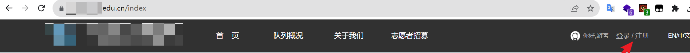
0x4.渗透利用
漏洞点1–未授权访问
测了一下注册点逻辑，利用不了遂放弃进入后台。
然后我进入了个人后台，我发现了有数据申请的功能于是着手开测：
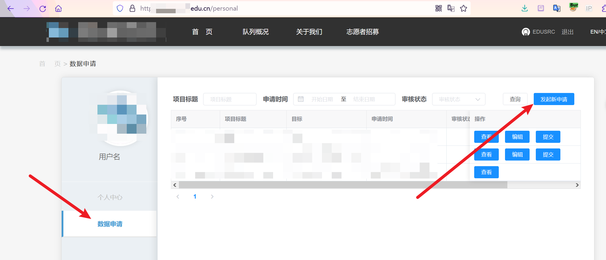
遇到上传点，我们测一测！
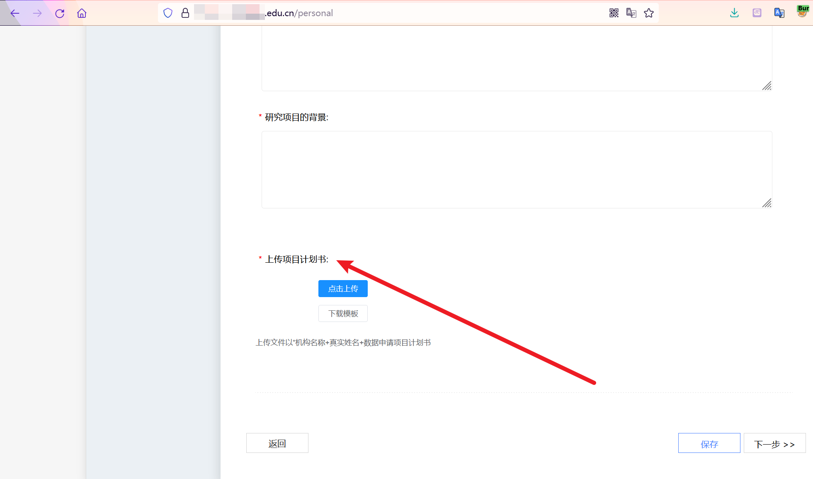
嗯？没有过滤吗？直接传上shell了？但是Burp抓包查看返回也没有留下上传路径遂作罢。
然后我点击了下载模板按钮抓包如下：
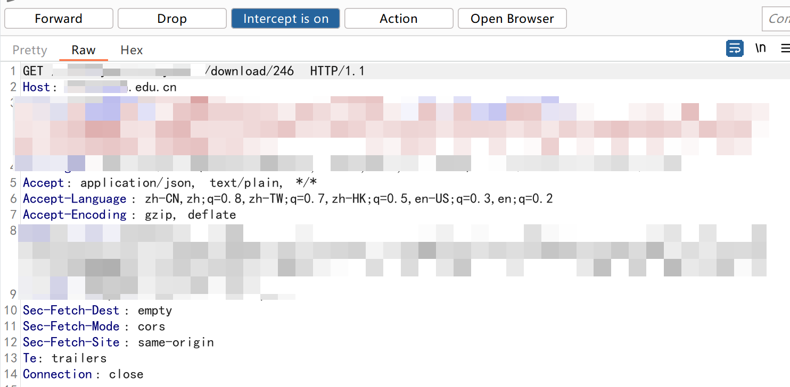
1 | https://xxx.edu.cn/xxx/xxx/download/161 |
我的直觉告诉我这个链接非常可疑！
我这里直接改成其他数字，啪！直接把别人上传的隐私文件下载下来了！
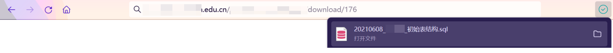
通过burp快速探测我发现数字为 157 —293都可以下载文件，也就是说泄露了快150个敏感文件。如果不修复这个漏洞的话，后面不管谁上传的文件都可能被任意下载。
还有多个学生证照片/教工证照片/内部信息文件等敏感信息。好嘞初步rank到手！
这里就可以解释一下我上传shell了但是却连接不上：
访问对应的链接发现：
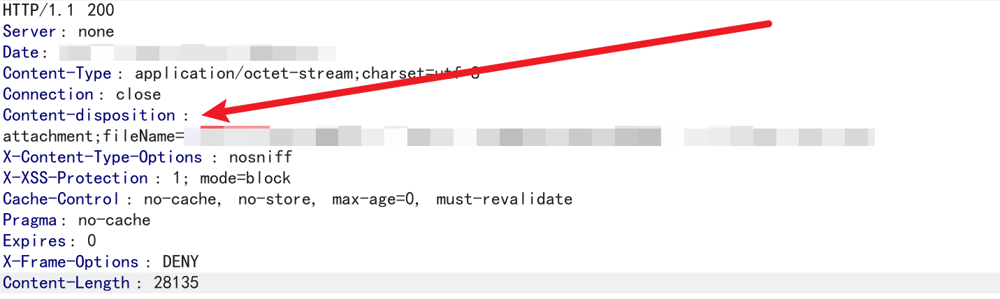
Content-Disposition 是 HTTP 头字段之一，它通常用于指定如何处理由服务器返回的响应内容。
这里这个头的意思是告诉客户端浏览器，响应的内容应被视为附件（文件下载），而不是在浏览器中直接显示。我尝试绕过也没有成功，也就是说文件直接没有解析了所以getshell方面我就作罢了。
为了确保能上中危，我决定再继续测一点功能。
漏洞点2–水平越权
注册两个账户
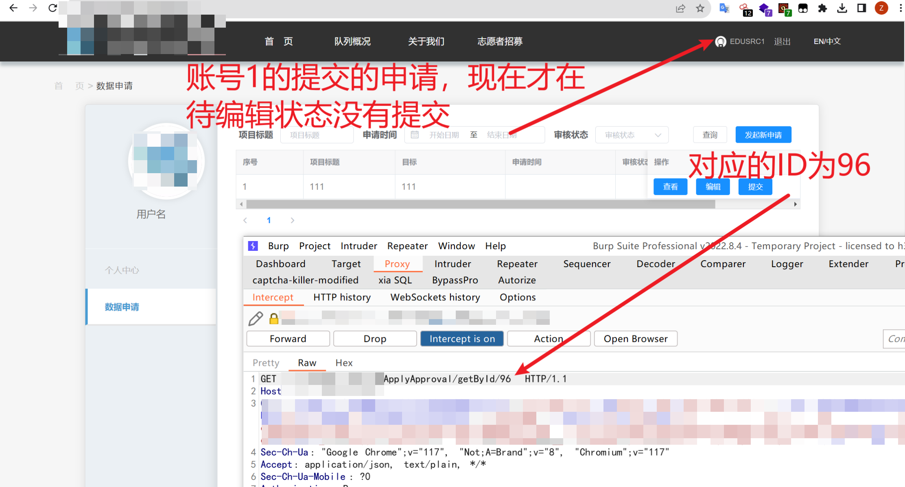
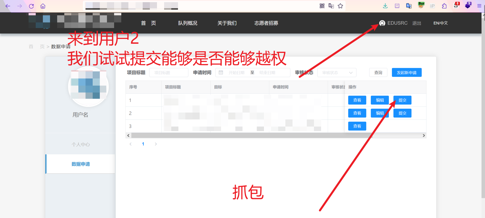
截取POST包：
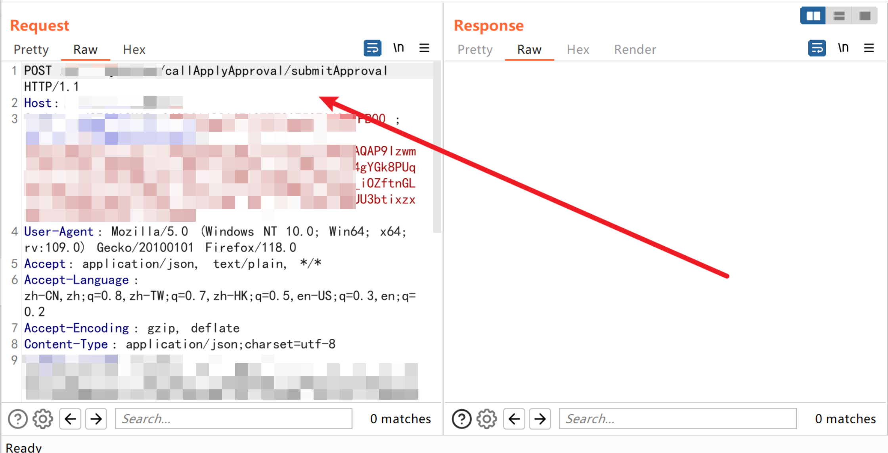
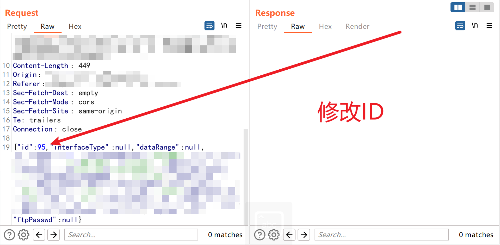
回显成功：
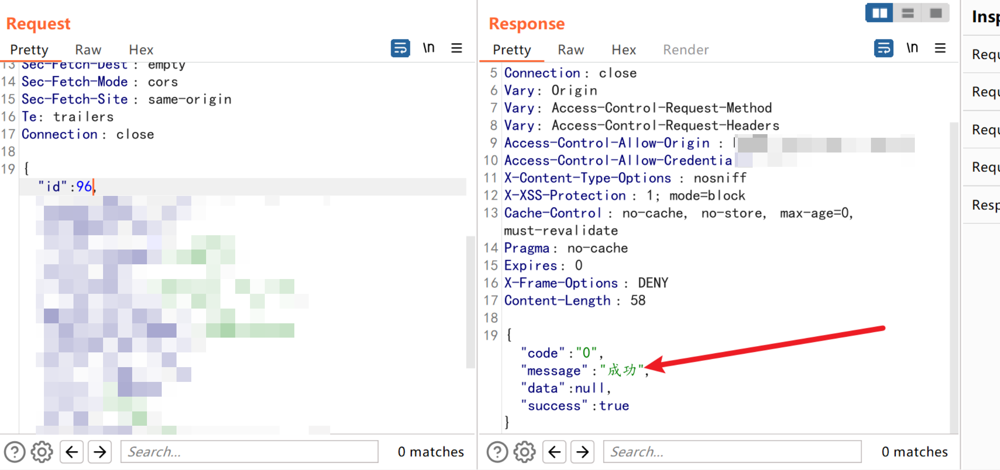
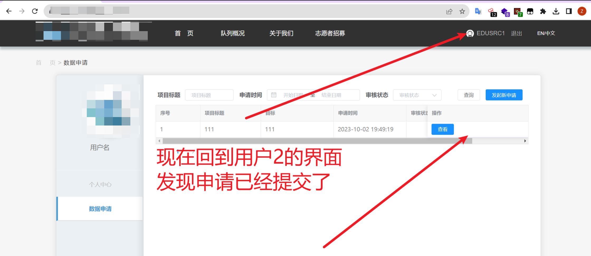
通过这样可以让任意申请进行提前提交。
0x5.总结
总的来说信息搜集非常重要，同时细心也非常重要。不要因为某个点没测成功就放弃了，可以多去尝试尝试其他的地方。而且想要快速出成果的话最好去找那种可以任意注册的站~
- 本文标题：EDUSRC(一)：某985证书站挖掘记录
- 本文作者：二十八华生
- 创建时间：2023-10-18 19:37:17
- 本文链接：2023/10/18/EDUSRC-一-：某985证书站挖掘记录/
- 版权声明：本博客所有文章除特别声明外，均采用 BY-NC-SA 许可协议。转载请注明出处！